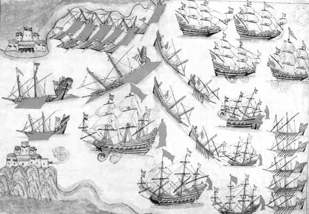

YEDİNCİ BÖLÜM
OSMANLI’NIN ÇANAKKALE’Sİ
Çanakkale Adı
Osmanlı döneminde Çanakkale halkının büyük kısmı çanak çömlek imalatı ve ticareti ile uğraşmakta aynı zamanda ipekçilik ve yelken bezi imali ile de iştigal etmektedir. Üretilen çanak çömleğin şöhreti kısa zamanda yayılmış ve Çanakkale dışına da ihracat edilir olmuştur. Çanak imalatının getirdiği ünle birlikte zamanla Kale-i Sultaniye’ye Çanak Kalası denilmiş bu isim sonradan Çanakkale’ye dönüşmüştür.
Şehrin çanak şeklinde olmasından dolayı böyle bir isim aldığı iddiaları ise gerçeklerle uyuşmamaktadır.
Çanakkale’ye Dardanel Denilme Israrı
Bugün pek çok batılı kaynakta Avrupalıların Çanakkale Boğazı için kullandıkları tabir “Dardanel”dir. Çanakkale civarında kurulmuş medeniyetlerden olan Truva’nın Kralı Dardanos’un adı yüzyıllardır şehre isim olarak verilmektedir. Oysa bu adı taşıyan şehir (Dardanos) ilkçağ gelmeden yıkılmıştır ve günümüzdeki Çanakkale’de Dardanos’a dair herhangi bir iz mevcut değildir. Batılıların bütün bunlara rağmen isim ısrarını, bölgenin Türklerin ve Müslümanların elinde olmasını hazmedememelerinde aramak daha doğru olacaktır.
Akdeniz Boğazı
Çanakkale Boğazı’na Osmanlıların verdikleri isim umumiyetle “Akdeniz Boğazı”dır. Piri Reis bu ismi kullanır. Katip Çelebi’nin Cihannüması’nda da benzer isme rastlanır.75 Ege Denizi’ni Akdeniz olarak kabul eden Osmanlıların böyle bir isim vermeleri normaldir. Şehre Fatih’in yaptırdığı kalelerden dolayı Kal’a-i Sultaniyye denilince Boğaz’a da aynı adın verildiği de görülür.

Çanakkale gravürü, Bartlett 1838
Çanakkale İstanbul’dan Daha Mühimdi
Çanakkale Boğazı ve civarı ilk çağda İstanbul’dan çok daha mühim bir şehir olarak karşımıza çıkar. Bu dönem medeniyetlerinin özellikle Ege Denizi kıyılarında kurulduğu düşünülecek olur ve İstanbul’un o dönemde ehemmiyet kazanmadığı göz önünde bulundurulursa bu iddia daha iyi anlaşılır. Bölgede antik çağda Truva, Dardanos, Abydos, Sestos, Lampsakos gibi çok mühim kentler kurulması ehemmiyetinin bir başka ispatıdır. Ege Medeniyetlerinin ticarette kullandıkları Çanakkale Boğazı o dönemlerde İstanbul Boğazı’ndan çok daha fazla kullanılmaktadır.
Bölge tarihin çeşitli dönemlerinde Lidya, Pers, Atina, İskender İmparatorluğu, Roma, Bizans ve Osmanlı hâkimiyetinde kalmıştır.
Çanakkale Boğazı’na Gelen İlk Müslümanlar
Çanakkale, Bizans hâkimiyetinde iken bu mühim su yolunun kendi başkentleri için önemini kavrayan Bizanslılar, Boğaz’ın müdafaası için büyük çaba harcamış, kale ve surlarla Boğaz’ı korumaya çalışmıştır. Bizanslıların bütün tedbirlerine rağmen, Peygamber muştusunun peşinde İstanbul’u fethetme niyetinde olan Emevi donanması, 668’te Çanakkale’yi geçmeyi başarır ve İstanbul önlerine kadar gelir. 717 senesinde de Mesleme b. Abdülmelik kumandasındaki İslam ordusu kara yoluyla Abydos’a kadar gelmişler ve bu noktadan Boğaz’ın karşı yakasına geçmiştir.
Çanakkale ve Haçlılar
Kudüs’ün Müslümanların elinden Haçlıların eline geçişinin ardından başlayan dönem, İslam dünyasında derin bir hüzün meydana getirmiş ve ardından “Şark’ın sevgili sultanı” olarak bilinen Selahaddin Eyyubi, Kudüs’ü Haçlıların elinden geri almıştır. Bunun üzerine III. Haçlı Seferi düzenlenmiştir. Alman İmparatoru Friedrich Barbarossa kumandasındaki kalabalık ordu, 1189 Mayıs’ında Kudüs’e doğru yola çıkar. Macaristan üzerinden Bizans topraklarına girer. Düzenli bir ordudan ziyade başıbozuk bir kalabalık intibaı veren Haçlı ordusu, Balkanlar’da pek çok hadiseye sebep olur. Alman İmparatoru Friedrich Barbarossa ile Bizans İmparatoru II. Isaakios Angelos arasında anlaşmazlık çıkar.
Bütün bu anlatılanların Çanakkale ile olan alakası ise Barbarossa’nın ordusunu Anadolu’ya geçirdiği yer olarak, İstanbul’u değil de Çanakkale Boğazı’nı tercih etmiş olmasıdır.76
Anadolu’ya ayak basan Almanların çoğunlukta olduğu Haçlı ordusunu, Anadolu’da misafirperverliğiyle meşhur milletinin evlatları, hiç de misafirperver olmayan bir tutumla karşılamak zorunda kalır. Zira gelenlerin hedefi malumdur. Haçlı ordusu Anadolu’dan geçinceye kadar II. Kılıçarslan’ın askerleri tarafından yıpratılır. Son darbeyi de Kudüs önlerinde Selahaddin Eyyubi vurur.
Çanakkale Boğazı Yerine İstanbul Boğazı’nı Kullanan Padişah
İstanbul’un fethine kadar Osmanlıların Rumeli fetihlerinde karşı kıyıya geçtikleri yer kendilerine ait olan Çanakkale Boğazı’dır. Ancak bu durumun bir istisnası vardır. Sultan II. Murad, Çanakkale Boğazı kapatıldığı için İstanbul Boğazı’nı kullanmak zorunda kalmıştır. İstanbul o dönemde Osmanlı toprağı değildir. 1444 yılında Segedin Antlaşması’ndan sonra Haçlı donanması Çanakkale Boğazı’nı abluka ettiğinden Sultan Murad, Varna Savaşı için Rumeli’ye geçişini İstanbul Boğazı üzerinden yapmak zorunda kalmıştır.
Çanakkale ve Darülislam
Müslüman bir devletin hâkimiyeti altındaki topraklar için kullanılan fıkhî terim Darülislam’dır. Osmanlı Devleti zamanında Karadeniz, İstanbul ve Çanakkale Boğazları İle Otranto Geçidi üzerinde hâkimiyet kurulmuş, bu sular ilk defa Osmanlı zamanında dârülislâmın bir parçası sayılmıştır.
Çanakkale ve İzn-i Sefine
Osmanlı bahriyesinde bir geminin seyrüseferi için devletçe verilen izne izn-i sefine (Gemi izni) denilmektedir.
Bu belge, Çanakkale ve İstanbul boğazlarından geçecek gemilerin Boğaz’dan serbestçe giriş çıkış yapabilmesini de ifade eder. Özellikle yabancı gemilerin Çanakkale ve İstanbul Boğazı’ndan geçmeleri için belirli bir ücret ödeyerek bu izni almaları gereklidir. İzn-i Sefine sayesinde devlet Boğazlardan hatırı sayılır miktarda para kazanır.
Çanakkale’den Ancak Beş Gemi Geçebilir
Çanakkale Boğazı’ndan geçecek gemilerin uyması gereken bazı kurallar mevcuttur. Bölgeden geçen seyyahların kaleme aldığı bu kurallardan biri ticaret gemilerinin Boğaz’a gelişlerini bir top atışıyla haber vermeleridir. Boğaz’daki kalelerden yapılan top atışlarıyla da cevabi atışlar yapılır. Kurusıkı toplarla yapılan ve herhangi bir güllenin fırlatılmadığı bu merasimleri müteakip gemiler kontrol edilir ve geçiş vergisi alınarak Boğaz’a girmelerine müsaade edilir. Bu konuda bir de Osmanlıların uyguladıkları bir sayı kaidesi de vardır. Yabancı gemilerin en fazla beş adedinin aynı anda Çanakkale Boğazı’nı geçmesine müsaade edilir. Bu kuralların çoğu 18. Yüzyıla kadar yürürlükte kalmıştır.
Çanakkale ve Karantina
Osmanlı Devleti’nde sistemli karantinanın ilk uygulandığı yerlerden biri Çanakkale’dir. Özellikle gemilerle taşınan salgın hastalıklara karşı tedbir alan devlet, Akdeniz çevresinde görülen kolera salgınına karşı Çanakkale’de karantina çadırları kurmuştur. Marmara ve İstanbul’a gidecek gemiler burada bir müddet bekletilir (yaklaşık bir hafta) bir hastalığa rastlanmazsa yoluna devam etmesine müsaade edilir. Çanakkale’de karantina müdürlüğü oldukça yetkili bir konumdadır.
Akdeniz ve Ege’den, Anadolu ve Rumeli sahillerinden gelip de İstanbul’a gidecek olan bütün gemilerin mürur tezkireleri ancak Çanakkale’ye kadar geçerlidir. Buradaki karantina teşkilatından alınacak yeni tezkire ile yola devam edilebilinir. Çanakkale karantina teşkilatı bu yönüyle İstanbul’a gidecek gemiler için çetin bir imtihan noktasıdır. Aynen 1915’te Çanakkale’yi geçmeye çalışan işgal donanmalarına olduğu gibi.
Çanakkale ve Kaleler
Osmanlı askerî sisteminde savunma için kale ve istihkâmların inşası mühim yer tutar. Osmanlı tarihinde kale, sur, istihkâm vs. gibi savunma yapılarının inşa edileceği mekânların seçiminde stratejik mekânlara ehemmiyet verilir. Osmanlı coğrafyasında en stratejik yerlerin başında Çanakkale ve İstanbul boğazları gelir.
Fatih’in Çanakkale’yi Müdafaa Planı
Fatih Sultan Mehmed’in Çanakkale’nin güvenliği için yaptığı en mühim çalışmalar elbette kale inşa etmesidir. Ancak dâhi padişah, sadece bu tedbirin Çanakkale’yi müdafaa etmek için kâfi gelmeyeceğinin farkındadır. Bu sebeple savunma tedbirlerine iki hususu daha ilave eder: Adalara hâkim olmak, donanmayı kuvvetlendirmek. Boğaz’ın yakınlarındaki adalar başta olmak üzere pek çok Ege adası fethedilir. Dönemin donanma komutanı olan Baltaoğlu Süleyman Bey kumandasında mevcudu 400 parçayı aşan bir Osmanlı filosu kurulur.
Kilitbahir Kalesi’nin Sırları
Çanakkale’ye adını veren kale ve istihkâmlar, Osmanlı tarihi boyunca her zaman çeşitli maksatlar için kullanılmıştır. Kilitbahir, kelime manası olarak denizin kilidi demek olup Çanakkale Boğazı’nın Rumeli yakasında deniz geçişini kontrol altında tutmak maksadıyla Kal’a-i Sultâniyye’nin karşısına yaptırılmıştır. Banisi Fatih Sultan Mehmed’dir.
Ecdadın Çanakkale’ye yaptığı kaleler arasında günümüze ulaşan en eskisi Kilitbahir’dir. İnşa tarihini Evliya Çelebi İstanbul’un Fethi’nden evvel gösterse de fetihten sonra yapılmış olma ihtimali daha yüksektir.
İnşaatında Sestos ve Kilyaus enkazlarındaki taşlardan istifade edilmiştir. Böylece bölgenin eski yerleşim bölgelerinin hatıraları yeni bir eserde yaşatılmıştır.77
Fatih döneminde yaşayan Tursun Bey’in tarihinde Eceovası’nda Kilîdü’l-bahr ve karşısında Sultaniye adında kalelerin bulunduğundan ve önlerinde topların mevcut olduğundan bahsedilir.

Kilitbahir Kalesi minyatürü
Kalenin ismi hakkında Pîrî Reis, Marmara’dan çıkan gemilerin, Çanakkale Boğazı’ndan geçiş iznini Rumeli tarafındaki kaleden aldıkları için bu kaleye Bahr-i Kilîd denildiğinden bahseder.
Kilitbahir Kalesi, Kanuni Sultan Süleyman devrinde ciddi bir tamirden geçmiştir.
Kale çok ilginç bir plana sahiptir. Dış kale, İç kale ve hendeklerden oluşan pek çok güvenlik tedbirine sahip kalenin dış tarafı kıyıda yükselen üçgen biçimli bir başkule ve onun etrafında 20 m. yükseklikte, üç yapraklı yonca biçiminde bir duvardan oluşur.
İç kale, askerî mimaride başka bir misali olmayan üç yapraklı yonca biçimindedir. İç kalenin etrafında daha alçak bir duvar mevcuttur. Bunun etrafında da daha alçak bir duvar hâlinde ikinci tahkimat bulunmaktadır. Kanuni’nin yenilemesi esnasında güney tarafına bir kule yapılmıştır. İç kalenin dışında da suyunu denizden alan geniş bir hendek vardır. Kalenin çok ilginç bir özelliği de evvelce kuzey tarafındaki, hendek üzerine inen ahşap bir köprü vasıtasıyla içeri girilebilmesidir.
Kalenin güneyinde bir avlu ve yuvarlak bir burç inşa edilmiştir. Kilitbahir’in mimarı belli değildir. Ancak iç kaleyi inceleyen konunun uzmanları bu meçhul mimarın çok üst seviyede geometri ve matematik bilgisine sahip olduğunu ve bunu pratikte başarıyla uyguladığı konusunda hemfikirdir.
Kilitbahir her ne kadar denizden gelecek tehditler için yapılmış gibi gözükse de karadan gelebilecek hücumlara karşı dayanması da düşünülmüştür.
Evliya Çelebi, 1659 Kilitbahir Kalesi’ni görmüş ve teferruatlı bir biçimde anlatmıştır. Çelebi’nin anlattığı bir hadise ilginçtir. Kilitbahir Kalesi’ndeki toplardan bir tanesi padişah baştardesi (donanmanın amiral gemisi) geçerken onu selâmlamak için ateşlenir. Ancak barut namlunun içinde sıkışır ve namluyu patlatır. Evliya Çelebi bu hadisede hisar içindeki pek çok evin tahrip olduğundan bahseder.
Kale-i Sultaniye: Sadece Adı Kalan Kale
Kilitbahir Kalesi’nin karşı kıyısında yükselen Kale-i Sultâniye de Fatih devrinde yapılmış olmakla beraber sonraları çok değişmiştir. Çanakkale savaşlarının öncesinde de klasik kale görünümü bozularak tabyalar eklenmiştir.
Boğazın girişinde Seddülbahir ve Kumkale adlarındaki karşılıklı iki kale diğer kalelere göre oldukça geç inşa edilmiştir.
Sultaniye - Hakaniye
Köprülü Mehmed Paşa sadarete getirilince ilk yaptığı işlerden biri Çanakkale’deki Venedik ablukasını kaldırmak olmuştur. Kendisinin bizzat iştirak ettiği bir deniz savaşını müteakip Boğaz’daki ambargo kaldırılmıştır. Savaşın ardından Boğaz’ın savunmasının istenen seviyede olmadığını bildiren Köprülü, Sultan IV. Mehmed ve Valide Hadice Turhan Sultan’ın bölgeye iki kale hediye etmesini sağlamıştır. 1915 Çanakkale Savaşlarında da kullanılan 1659 yılı yapımı bu kaleler Boğaz’ın girişinde yer alan Rumeli tarafındaki Seddülbahir ile karşı kıyıda yer alan Kumkale’dir. Kumkale’nin masrafları padişah tarafından karşılandığı için adına “Kal’a-i Hâkâniyye” denilmiştir. Seddülbahir’in masrafları ise valide sultan tarafından karşılandığı için kale, “Kal’a-i Sultâniyye” adını almıştır. Yeni kaleler daha evvel Fatih devrinde yaptırılan Kilitbahir ve Kal’a-i Sultâniyye ile birlikte Boğaz’da düzenli bir savunma hattı oluşturmuştur.
Çanakkale ve Girit
Darüssaade Ağası Sümbül Ağa’yı hacca götüren Osmanlı gemilerinin Girit yakınlarında Malta korsanları tarafından saldırıya uğraması ve gasp edilen eşyanın Girit’e satılması üzerine Osmanlıların Girit macerası başlar. Kaptan-ı derya Yusuf Paşa’nın Girit’te kısa sürede Hanya Kalesi’ni fethetmesi (1645) gelecek için büyük ümit vermiştir. Ancak bir çeyrek asır devam eden savaşın faturası oldukça kabarık olmuştur. Girit’in fethinin tamamlanmasıyla Doğu Akdeniz’deki hâkimiyetinin biteceğinin farkında olan Venedik, Çanakkale Boğazı’nı ablukaya alarak Girit’e kuvvet gönderilmesine engel olmuştur. Bu engelleme savaşı uzatır. Ancak Venedik’in ne Bozcaada ve Limni’yi zapt etmesi ne de Çanakkale Boğazı’nı ablukaya alması Osmanlıları Girit fethinden vazgeçirmeye yetmez. Yirmi beş yılda Girit’teki kaleler teker teker alınarak fetih tamamlanır.
Venediklilere Çanakkale Geçilmez Demek
Yirmi beş sene devam eden Girit Savaşı esnasında Çanakkale Boğazı’nın önünü kapatan Venedik donanması bu ablukası ile İstanbul’un tehlikede olduğu haberini de yayar.
Osmanlılar bu Venedik tehlikesini, kale ve istihkâmlardan yapılan başarılı top atışları ile bertaraf etmiştir. Bu bombardımanın başarısı Venediklileri de etkilemiştir. Dönemin Venedik kaynaklarında her ne kadar kendileri zarar görseler de Osmanlı topçusunun atışlarından sitayişle bahsedilir.78
Kara Mehmed’den Seyit Onbaşı’ya
Girit Kuşatması esnasında Venediklilerin Çanakkale Boğazı’nı ablukası sürüyordu. Osmanlı donanması, 1657’de İstanbul’dan Çanakkale istikametine doğru hareket etti. Donanma gücünü artıran Venediklilerle yapılan ilk kapışma da Osmanlılar galip gelemedi. Yılların tecrübesi Köprülü Mehmed Paşa, Venediklileri Boğaz’a gömememenin şaşkınlığını üzerinden atamadan bir başka garip hadiseye şahit oldu. Osmanlı gemilerinin bir kısmı münasip bir rüzgâr bulamadıkları için Kumburun açıklarına demir atmış halde bekliyordu. Osmanlı donanmasının böyle tedbirsiz olarak beklediği anlarda neler yaşadığını ihtiyar sadrazamın bilmemesine imkân yoktu, ancak elden bir şey gelmiyordu. Venedikliler ayaklarının dibine kadar gelen bu büyük fırsatı tepmeyi düşünmedi ve derhal hücuma geçti.
İşte ne olduysa o dönemde oldu. Ocean zırhlısını 265 kg. mermi ile vuran Seyit Onbaşı gibi Kara Mehmed ismindeki gözü pek bir topçunun yaptığı atış savaşın seyrini tamamen değiştirecekti, zira mermi amiral gemisinin barut deposuna isabet etti ve gemi sulara gömüldü. Şoka girme sırası Venedik donanmasına gelmişti, yeniden Osmanlı kuvvetleri üzerine panikle saldırmayı deneseler de başaramadılar. Venediklilerin Çanakkale Boğazı’ndaki kuşatması da bitmiş oldu. Bozcaada ile Limni yeniden Osmanlıların eline geçti.79
Çanakkale Ambargosunun Doğurduğu Buhran
IV. Mehmed zamanında Venediklilerin Girit dolayısıyla Çanakkale Boğazı’nı ablukaya almalarının Osmanlı toplumunda çok sıra dışı bir neticesi daha ortaya çıktı. Ayrılıkçı sosyal hareketlerin; devletlerin idari, mali, siyasi bunalımlarında ortaya çıkması bir tesadüf değildir. Kadızadeliler de 17 yüzyılın sonlarında Osmanlı’nın içinde bulunduğu buhran ortamı içerisinde ortaya çıkan bir hareket oldu. Kadızadeliler adı verilen vaizler zümresi Boynueğri Mehmed Paşa’nın tayin işlerinde ulema ve vaizlere danışmayarak tayin işlerini bizzat kendisi yapmaya başlayınca Kadızadeliler de harekete geçmiştir. Çanakkale’deki hadise Kadızadelilerin propaganda yapmaları için iyi bir fırsat doğurmuştur. Venedik donanmasının Boğaz’ı ablukaya almasını zulmün, rüşvetin artmasından kaynaklandığı yolunda verilen vaazlarla halk tahrik edilmiştir.80 Kadızadeliler hareketinin uzun süre Osmanlı toplumunda tesiri görülür.
Çanakkale ve Ceza
Çanakkale kaleleri güvenlik vazifeleri dışında farklı bir iş daha görmüşler ve suçlu yeniçerilerin mecburi ikametgâhları olmuşlardır. Süleymaniye’deki Yeniçeri Ağası Sarayı’nda (Ağakapısı) sorgulanan asker eğer suçlu bulunursa Eminönü’nden Çanakkale’deki kalelere gönderilerek burada hapsedilirdi. Bu hapisliğe kalebent denirdi.
Ruslar Çanakkale’ye Neden Saldıramadı
1770’te Rus donanmasının Çeşme’de büyük bir strateji hatası yapan Osmanlı donanmasını imha etmesi Çanakkale’de Rus tehdidini doğurmuştur. Ancak Rus filosu korumasız kalan Çanakkale Boğazı’nı ablukaya alarak İstanbul’u tehdit etse de Rusların Çanakkale’ye saldırmaya niyeti yoktur. Çanakkale istihkâmlarının şöhretini bilen Ruslar Çanakkale’yi zorlamaya cesaret edemez. Ancak bu hadise Osmanlı tarihinde başkentin ilk defa doğrudan doğruya bir tehditle karşılaşması olarak yerini alacaktır.
Rusların bu dönemde yaptığı en mühim faaliyet Limni’ye asker çıkartmak olsa da bir başarı elde edememişlerdir.
Çanakkale’ye En Çok Saldıran Devlet
Çanakkale’ye Osmanlı tarihi boyunca en çok saldıran devlet sanılanın aksine İngiltere, Fransa, İspanya vs. değil Venediklilerdir.
Venedikliler Sultan Çelebi Mehmed zamanından itibaren Çanakkale’ye saldırmıştır. Çelebi Mehmed’den sonra Sultan II. Murad, Fatih Sultan Mehmed, IV. Murad, Sultan İbrahim ve Sultan IV. Mehmed zamanlarında saldırıya devam etmişlerdir.
Çanakkale’nin En Sakin Yılları
Çanakkale Boğazı 1464 yılındaki Venedik taarruzundan sonra XVII. yüzyıl ortalarına kadar yaklaşık iki asır hiç taarruz görmedi. Bu dönem 1464 ila 1645 yıllarını kapsamaktadır. Çanakkale’yi tehlikeye düşüren en mühim hadise ise bir türlü fethi tamamlanamayan Girit olur. 1645 yılında başlayan Girit Seferi, Venediklilerin defalarca Çanakkale Boğazı’na hücum etmesine veya ambargo uygulamasına sebep olacaktır.
Çanakkale Boğazı’nı Kapatmak
Çanakkale Boğazı’nın kapatılması için Sultan IV. Mustafa zamanında ilginç bir karar alınır. Eski sadrazamlardan Hafız İsmail Paşa’ya Akdeniz Boğazı ve Çanakkale muhafızlığı vazifesi verilir. (1807), Paşadan istenen bir de iş vardır: Çanakkale Boğazı’na demir atmış salları bir zincirle birbirine bağlayarak Boğaz’ı kapatmak. Ancak paşa bu zor görevi yerine getiremez, zira dört ay sonra vefat eder. Bu çok ilginç düşünce de tarihteki yerini alır.
İngilizler Savaştan Bir Asır Evvel Çanakkale’yi Neden İstedi
Napolyon’un Mısır’ı işgali (1798) ile İngiltere ile Osmanlı arasındaki ilişkilerde geçici bir yakınlaşma başlatmıştır. Osmanlılar, Fransızları Mısır’dan çıkarmak için çabalarken İngiltere askerî ve malî yardım yanında diplomatik destek de sağlar. Bu yakınlık sadece düşmanlığıyla bilinen İngiltere ile Osmanlı arasında tarihte ilk defa ittifak anlaşması imzalanmasını sağlamıştır. (1799)
Bu antlaşma meydana getirdiği neticelerden ziyade bir ilk olmasından fazla bir özellik taşımaz. Osmanlı Fransa yakınlaşması başlayınca ittifak anlaşması da geçerliliğini kaybeder. Osmanlı Fransa ilişkilerinden rahatsızlık duyan İngiltere ve Rusya, Osmanlı’ya bir ültimatom vererek Fransızlarla ilişkilerini gözden geçirmesini ister. Ültimatomun ardından Rusya, Eflak ve Boğdan’a asker çıkarır. İngilizler de Çanakkale istihkâmlarının kendilerine teslim edilmesini talep eder. İngiltere Osmanlı’yı zorda bırakmak için yaptığı bu çılgınca teklifte, istediği söz konusu yerde bir asır sonra tarihinin en büyük yenilgilerinden birini alacağını acaba hiç aklına getirmiş midir bilinmez. Kabulü mümkün olmayan istek Osmanlı hükümeti tarafından reddedilince İngiliz donanması İstanbul’a yönelerek şehirde korku meydana getirdi. (Şubat 1807). Bununla birlikte direnişte karar kılınınca, İngiliz donanması bir şey yapamadan geri çekilir.
Çanakkale ve Tabyalar
İngilizlerin 1807’de Çanakkale’yi geçmelerinin ardından III. Selim zamanında Boğaz’da yeni tabyalar yapılmasına ağırlık verilmiştir. Zamanla sayıları artan bu savunma tesisleri 19. yüzyıla gelindiğinde en yüksek rakamına ulaşmıştır. Çanakkale Boğazı’nın iki tarafında kurulan tabyaların bir kısmı, yaptıran padişahın adıyla bilinmiştir. Mecidiye, Hamidiye, Mesudiye, Namazgâh, Yıldız, Ertuğrul ve Orhaniye bu tabyalardandır.
Çanakkale’yi Geçen İlk Yabancı Gemiler
1853- 1856 yıllarında cereyan eden Kırım Savaşı’nda ilk defa Karadeniz’e kıyısı olmayan İngiltere ve Fransa gemileri Boğazlardan geçerek Karadeniz’e açılmışlar ve Osmanlı’nın Kırım Savaşı’nı kazanmasına yardım etmişlerdir.
Çanakkale’de Yapılan Anlaşma
İstanbul ve Çanakkale Boğazlarından savaş gemilerinin geçişinde yeni baştan belirli şartlar getiren ve şehrin adından dolayı Kal’a-i Sultâniyye adını alan anlaşma, İngiliz elçisi Rober Ader ile Osmanlı adına Vâhid Efendi arasında burada imzalandı. (5 Ocak 1809)
Bu anlaşmanın en mühim yanı Boğazlar konusundan bahseden 11. maddesidir. Bu maddeye göre barış zamanında Boğazların yabancı savaş gemilerine kapalılığı İngiltere’ye kabul ettirilmiştir. Ne gariptir ki bu antlaşma ile barış yoluyla İngiltere’ye kabul ettirilen Boğaz’ların kapalılığı 106 sene sonra savaş yoluyla öğretilecektir.
Çanakkale ve İtalyanlar
Sömürgeleştirme derdinin sarhoşluğuna geç kapılan İtalya evvela Osmanlı toprağı olan Trablusgarp’ı ardından da Bingazi’yi işgal etti. Çok kolay olacağı tahmin edilen işgalde direnişle karşılaşınca, Osmanlı’yı barışa zorlayabilmek için savaşı Anadolu sahillerine, Ege Denizi’ne doğru kaydırmaya karar verdiler. Beyrut’a yapılan bombardımanı Çanakkale Boğazı’na yapılan saldırı takip etti. 18 Nisan’da bir İtalyan filosu Çanakkale Boğazı ve Sisam adasına dayanmış ve İstanbul’u tehdit etmek için Çanakkale Boğazı’na saldırmıştı. Ayrıca adaların Anadolu ile haberleşmesi kesilmiş, Çeşme telgraf merkezini tahrip edilmiştir. Bütün bu faaliyetleri sonunda İtalyanlar istediklerini almışlar ve Ekim 1912’de Uşi Anlaşması’nın imzalanmasını sağlamışlardır.
Gariptir savaştan dört sene evvel Çanakkale’ye saldıran İtalyanlar, dört sene sonra Çanakkale Deniz Savaşları’nın hemen ardından Büyük Savaş’ta yer alacağı safı belirlemiştir.
Çanakkale Padişah Ağırlıyor
Çanakkale’ye gelen ilk Osmanlı hükümdarı Orhan Gazi’dir.
1665’te Sultan IV. Mehmed, Avusturyalılarla mücadele eden Köprülüzade Ahmed Paşa’nın Edirne’ye dönmesini müteakip sadrazamı ile birlikte Çanakkale Boğazı istihkâmlarını incelemiştir.
1831 Haziranında Sultan II. Mahmud ikinci yurt gezisinde Çanakkale’yi ziyaret ederek şehirde bir hafta kalmıştır. Padişah bu esnada Kal’a-i Sultâniyye olmak üzere Kilitbahir, Seddülbahir, Kumkale ve Bozcaada kalelerini dolaşmış, yapılan top atışı tatbikatlarını bizzat izlemiştir.
19. yüzyılın ortalarına reayanın ihtiyaçlarını yerinde tespit etmek ve şikâyetlerini dinlemek için memleket içinde seyahatlere çıkan Sultan Abdülmecid de 25 Haziran 1844’te gerçekleştirdiği gezide Eser-i Cedîd adlı gemiyle Çanakkale’ye gelmiş ve mevcut kalenin savaşa hazırlık için yapılan tahkimatıyla bizzat alakadar olmuştur.
Sultan II. Abdülhamid, Çanakkale’ye bizzat gelmemişse de savaş öncesinde en ciddi tedbirleri almış, kalelerin tahkimatlarını yaptırmış ve yapılanların kendisine bildirilmesi için fotoğraflanmasını sağlamıştır. II. Abdülhamid’in Yıldız Albümleri’nde bu fotoğraflar halen mevcuttur.
Savaştan sonra Alman İmparatoru II. Wilhelm, Çanakkale’ye gelmiş, kendisine Enver Paşa ve Esad Paşa da eşlik etmiştir.
75 TDV İslam Ans. “Çanakkale” Mad. C.8
76 Bu konuyu kitabında değinen Schoen eserinin girişinde Çanakkale’yi tanıtırken “İmparator Friedrich Barbarossa idaresindeki Haçlı şövalyelerinin 1190’da kutsal vatan (Kudüs) topraklarının kurtarılması için yürürken çıkan nal ve silah sesleri bu derin vadilerde yankılanmaktaydı.” demektedir. Müellif, Osmanlı ile müttefik olan bir devlete mensup olsa da içindeki haçlı duygusunu yaşatmaktadır.
77 Yüzbaşı Kadri, a.g.e. s.75
78 Mahmut Şakiroğlu DİA Barut Md. C. 5 s. 92
79 Prof. Dr. METİN AND Skylife Ocak 2006
80 Semiramis Çavuşoğlu DİA. Kadızadeliler Md. C.24 s.102